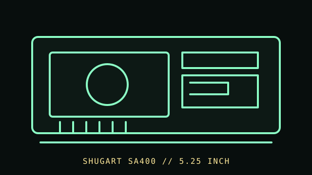

[ FLOPPY DRIVES // IDENTIFIED MODEL ]
Shugart SA400 5.25-inch Floppy Drive
The Shugart SA400 is a 5.25-inch floppy-drive mechanism from Shugart’s SA4xx family. Its original drive-side electrical interface and controller assumptions are not the same as a PC 34-pin cable.

MODEL IDENTIFICATION: Shugart SA400; verify model plate, assembly/revision, motor and interface configuration, and the manual edition. Confirm the full designation, revision, interface and service-document edition. This record is not a general compatibility guarantee.
Recorded specifications
| Catalog model | Shugart SA400 5.25-inch Floppy Drive |
|---|---|
| Device type | 5.25-inch internal mechanism |
| Interface / connector | Original Shugart drive interface as specified in SA400 documentation; use the exact documented connector/signals and an appropriate controller or adapter, not an assumed PC pinout. |
| Media / formats | 5.25-inch flexible magnetic disks; usable geometry, encoding, and capacity depend on the exact SA400 revision, controller, disk, and recording format. No capacity is assigned here. |
| Revision caution | Verify model suffix, label, board/firmware revision, cable and manual edition. Model-family similarity is not proof of pinout, BIOS support, interchangeability or format compatibility. |
Host and controller compatibility
- This legacy drive requires controller and cabling matched to the SA400 interface. A PC-compatible 34-pin connector must not be assumed from the 5.25-inch form factor.
- Host BIOS/controller support is system-specific; if adapting, verify electrical levels, pin mapping, drive select, motor control, termination, and power from the drive and controller manuals.
- SA4xx-family suffixes and revisions may differ mechanically or electrically. Identify the exact drive before replacing parts or adjusting alignment.
Safe preservation and cleaning
Unplug controller and drive power before service. Reject contaminated or physically damaged disks. Use the SA400 service manual’s procedure for cleaning and adjustment; avoid solvents on media, manual head contact, and unrecorded alignment changes.
Photograph labels and connectors before service. Record the host, controller, settings, software, condition and source document. Keep original media or raw captures intact; verify checksums before making derivatives.
Manufacturer manuals & archival references
- Shugart SA400 Service Manual, April 1979 — Internet Archive / Bitsavers scanModel-family primary service documentation; confirm exact assembly and revision.
- Shugart SA400 Service documentation, May 1981 — Internet Archive / Bitsavers scanLater service reference; compare revisions before applying procedures.
- Shugart SA400 application bulletin — Internet ArchivePeriod manufacturer interface/application reference.
Archived manuals may apply to a particular revision or family. The complete model/revision-specific manufacturer manual takes precedence. Capacities and recording modes are omitted where they cannot be tied to the cited model and format.